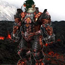

Forums galactiques > Assemblée Galactique : diplomatie officielle > Toute resistance n'est pas futile
Pages : 1 2
| MunSu Respect diplomatique : 748  01/02 ETU 01:00 | Score : 19 Détails Nerveux?
Ouaip... ... Y a comme une odeur bizarre non? C'est la peur... Dis petit t'es un bleu toi non? C'est ta premiere invasion éclair? ... Je m'en doutais. Moi tu vois c'est pas la premiere fois que je monte dans un kamikaze. J'ai fait la guerre contre les Enfants, et c'était pas joli joli. Je suis le seul de mon escadre à m'en être sorti. Ah oui je l'ai étudié à l'école militaire cette fameuse attaque preventive. Mais je dois reconnaitre que vu les forces en présences nous nous sommes défendus avec courage et honneur... Ben pourquoi tu rigole? ... Là tu sais ce qu'il se passe? Sur la feuille de route c'est écrit que la planete appartient à jean luc picard... Alors ça! Tu ne sais meme pas pourquoi tu vas mourir?! C'est la meilleure! Bon je ne vais pas te laisser dans l'ignorance: effectivement la planete appartient à picard, et en meme temps que nous, des dizaines de millions d'autres vaisseaux foncent sur les planetes borgs au travers toute la galaxie pour stopper leur expansion. La guerre fait rage depuis plus de quatres jours tu sais. Ca alors! Pourtant personne n'en a parlé à la télé de l'Assemblée. Quel interet? On allait pas déposer une plainte. Comme si on avait besoin de l'aide de quiconque... mouais. Mais pourquoi nous sommes en guerre au fait? Tu sais petit, ce genre de choses se décident en haut lieu, comme si un pauvre pilote de kami comme toi ou moi peut saisir toutes les subtilités strategiques et politiques d'un tel conflit. Mais j'ai des potes au centre de commandement et je peux te raconter ce que j'ai entendu. C'est sûr que deux coalitions comme le Hellfire Club et le Collectif Borg, qui se ressemblent tellement d'ailleurs, s'observent et se jaugent depuis un moment. Il fallait que ça pete. Les Borgs ont un besoin maladif d'étendre leur espace vital, l'assimilation de toutes formes de vie fait parti de leur nature. Mais il n'y a pas eu des négociations, quelque chose? Si bien sûr mais elles sont venues trop tard, les bha étaient déjà lancées... Et après, tels que je connais le Général MunSu et les autres gars du Hellfire, ils ne conçoivent meme pas de laisser ça impuni. Attaque, contre attaque, ping pong sideral, la spirale infernale quoi... Mais enfin c'est nous qui les avons attaqués où c'est eux qui ont bougés en premier? Si ça pouvaient être aussi simple... Pour répondre à ta question, c'est eux qui ont lancés l'offensive en premier. Mais tu vois je flaire la manipulation. T'as entendu parler des Insurgés? Maintenant qu'ils n'ont plus d'ennemis, je les soupçonne de vouloir creer des conflits dans toute la galaxie pour après fondre sur les survivants pour eliminer des commandants dangereux pour eux. Le tout sous couvert de leur "mission divine" Mouais... Tu vas chercher loin quand meme, a mon avis l'orgueil et l'égo démesuré de ces commandants ont suffit à nous mettre dans cette situation sans qu'il y ai besoin de les aider. ... On arrive... Mon Dieu, c'est quoi tout ces bunkers?!!! C'est dingue. Ca devrait aller, l'attaque va réussir, mais il va y avoir beaucoup de casse. ... On va mourir? Comme tout le monde petit, comme tout le monde un jour. Souvient toi que la Fin est proche. Bat toi pour ton honneur et celui du Hellfire Club valar morghulis Tout le monde peut réagir, et surtout le Collectif Borg. Merci d'entourer ça d'un minimum de RP. Et désolé pour les dommages collateraux... | ||
| Ju Respect diplomatique : 824  01/02 ETU 01:19  | Score : 4 Détails Ses espions venaient de transmettre la derniere communication du vaisseau kakimkaze 156987 au Général Ju... Général... Lui qui quatre jours plutôt était seulement commandant, jeune qui plus est, était en train de se former sur le tas au dur art de la guerre...Quel plaisir! Les frissons ressentis a chaque fois qu'il allait consulter ses rapports...
Commandant Munsu, les sacrifices de votre peuple ne seront pas vains... Tous mes respects. Gal Ju. | ||
| Becyl Respect diplomatique : 28  01/02 ETU 02:10 | Score : 15 Détails Un message passait depuis quelques heures sur les ondes dans lesquels des systèmes étaient envahis par les opposants aux borgs
Commandants, je pense que vous ne réalisez pas votre chance, vous avez été choisis, choisis pour prendre part à la nouvelle évolution, que dis-je, révolution des espèces intelligentes. Au départ, tout comme vous, j'étais sceptique, je venais tout juste de rétablir mes communications lorsqu'il y a peu de temps, un vaisseau borg s'approcha de ma planète, considérant cela avec méfiance dans un premier temps, le conseil nain se réunit afin de décider des mesures à prendre face à cette arrivée impromptue. En tant que Gollengrom de mon peuple, je fut évidemment convié à la réunion, et obtient alors les pleins pouvoirs afin de jauger la situation de la part du conseil. Cependant, la menace était terrifiante, et les vaisseaux répetaient inlassablement le même message Toute résistance est inutile, soyez assimilez ou périssez Devant la force d'une telle armée et une telle démonstration, nous décidâmes de négocier avec le flotte en orbite. Il fut alors décidé de collaborer afin de prémunir toute une race d'une fin fatale. J'obtint alors de nouvelles conditions de vie... Imaginez donc vos faiblesses devenir votre force, vos atouts se décupler et vivre dans un bonheur presque irréel. Aujourd'hui, j'ai la force ancestrale de mon peuple, la vision d'un elfe, le courage d'un orc, l'intelligence d'un sage. Tout ceci s'est revelé a moi a partir du moment où nous avons envisagé le problème borg sous un autre angle. Je suis désormais le commandeur de mon peuple, libre de sa destinée borgienne, et même nous sommes encore un peuple au commancement de sa jeune destinée, notre avenir n'est que radieux. Commandants, réalisez une chose : les borgs ne sont pas là pour vous détruire, ils sont là pour vous rendre meilleurs et plus puissants. Evidemment, toute résistance à l'encontre de la societé borg serait prise pour une menace et serait annihiliée. Cependant, aujourd'hui vous avez encore le choix, joignez vous à un avenir étonnamment limpide, où toute véléité contre vos semblables ne serait que pure invention. Joignez vous aux borgs, pour votre avenir, votre survie et pour l'avenir de la galaxie. Toute résistance est inutile, soyez assimilez ou périssez Le message était répété en boucle, se terminant toujours par le même code formé de signaux aigus, incompréhensible pour tout ceux qui ne connaissaient pas la force de l'empire borg | ||
| Nezhal Respect diplomatique : 923  01/02 ETU 02:12 | Score : 19 Détails Archives Hégémoniennes. Tour centrale du conglomérat Hégémonien, bureaux du directeur général. Date : 30/01 ETU 22:19
"Bonjour Commandant Nezhal. - Bonjour Conseiller Altraj, que voulez vous ? - Depuis que le collectif Borg nous attaque, les conditions de travail ne sont plus respéctées. Nos employés courent de grand risques à continuer à travailler. Les bombardements ioniques et hyperatomiques sur nos système rendent tout travail impossible. Surtout que personne n'arrive à dormir avec ce boucan ! - Eh bien bougez les, payez les plus cher ! Construisez des abris assonorisés. Il faut que tout le monde travail. Le peuple de la troisième famille du Cartel Hégémonien ne doit pas se laisser abattre ! Ces Borgs ne vont quand même pas nous empécher de vivre ! Et pour les bombardements, renvoyez lui l'appareil, vous avez carte blanche ! - A ce propos, nous avons reçu plusieurs plaintes des la part de commandants ayant subit des dommages collatéraux, on les renvois à la salle des plaintes ? - Bien sur que non ! Dites leurs qu'ils seront dédommagés et envoyez les factures à jean luc picard. Nous ne sommes pas responsables de cette guerre. - Mais il risque de mal le prendre ! - Raison de plus ! Nous étions en négociations et il nous attaque ? Après on va encore nous traiter de fous sanguinaires et nous mettre une étiquette "A attaquer préventivement" sur le front ! Il mérite que nous résistions de toutes nos forces. Ou en sont nos affaires à part ça ? - Tout se porte pour le mieu. Les investissements dans le materiel militaire se voient dans nos courbes de croissances mais rien d'alarmant. - Faites attention à ne pas trop faire baisser les prix. N'en donnez pas trop aux membre, ça ferai monter l'inflation. Même si le Hellfire Club est en guerre, nous devons penser à nos interets. D'ailleurs, faites passer cette étude aux responsables des investissemenst en bourse. Il se pourrait que nous ayons découvert une nouvelle méthode permetant d'augmenter de 25% nos gains journaliers actuels. Demandez leur une étude de risques. - Très bien Commandant. - Revenez dès que vous avez des nouvelles. Au revoir." Nezhal prend son transpondeur X-Com sécurisé, tappe un numéro galactique. "... Après le bip, veullez laisser un message. BIIIIIP - Bon MunSu, dès que tu as du temps, rappelle moi. Je pense qu'il est temps de prévenir la galaxie de tout cela. Une fois déjà nous nous sommes fait avoir. Nous ne laisserons pas cela passer ! Bon courage !" Nezhal se vautre au fond de son fauteuil et réfléchi. Mais qu'est ce qui lui a pris à jean luc. Il a du péter son cable Samedi soir et on a tout prit dans la tronche... On était prêts à se rapprocher de lui, nos deux coallitions se ressemblent. Je ne comprend pas ce qu'il veut... Il nous met tous en danger en se lançant dans cette guerre. BRAAAAAAAOOOOOOUUUUUUUUMMMM BIIIIP BIIIIP Vous avez un nouveau message. Tain mais ça s'arrète jamais ? Il dort jamais ce Commandant ? Il sort d'ou ? "Qu'est ce que vous voulez encore ? Altraj, je vous ai demandé de me laisser. - Un nouveau bombardemment Commandant ! - Merci Altraj, j'avais entendu ! Et alors ? Ca fait deux jours que c'est comme ça ! - Nous avons perdu nos Croiseurs ioniques de défense. - Et alors ? on en contruit en continu non ? Ca ne devrait pas poser de problèmes. Quand allez vous me déranger pour quelque chose d'important. - Nos pertes en hommes sont conséquentes, à 100 personnes par Croiseurs Amiraux et 150 par croiseurs Ioniques, nous avons perdu 11 Millions d'âmes. - Certes cela commence à faire... Demandez 1 minute de silence demain et payez toutes les funérailles. Qu'on leur donne les honneurs militaires. - Et voici les nouvelles requetes d'approvisionnement des Commandants MunSu, Ju et golo." Nezhal se penche sur la commande et devient livide. - Mais quelle bande de gloutons ! Ahh que de mauvaises nouvelles... Allez vous en, vous gachez ma journée." Nezhal reprend son transpondeur X-Com et tappe un numéro frénétiquement. "MunSu, je t'attend au HellFire Café, on va se prendre un verre, j'en peux plus. Cette guerre m'épuise déjà." | ||
| jean luc picard Respect diplomatique : 595  01/02 ETU 04:58 | Score : 19 Détails vaisseau galactique Entreprise, date stellaire 0102200.7
Commandant, escadrilles ennemies à babord....ils verouillent leurs armes sur nous.....Trois torpilles en approche .... Alerte rouge Enseigne, manoeuvre d'evitement ! trop tard commandant, elles sont sur nous ... Polarisez la coque ! derivez toute la puissance disponible vers les boucliers! inverser les deflecteurs optronic et preparez vous à l'impact ! ...........Braoum ! Braoum ! Braoum !............. Faites moi un rapport des avaries, Enseigne ! ...les boucliers n'ont pas tenus... la distorsion est HS...Moteur a impulsion à 34 % d'efficacité....Integrité structurelle de la coque menacée...Les ponts 12 à 17 sont detruits...systeme d'armement en reinitialisation....Le générateur a plasma n'a pas été touché. Et bien, nous sommes encore en vie! ammenez nous a portée de tir... Erigez un champ de force subspatial pour contenir les ponts endomagés...les blessés à l'infirmerie...Des que les phaseurs sont prets verouillez sur la cible et tirez! ... Cible détruite commandant, mais nos degats sont importants, dois je mettre le cap sur la Base ? Certainement pas ...Doublez les equipes de maintenance, la salle de chargement 3 servira pour accueillir les bléssés, derivez les conduits subatomic des holodecks vers les boucliers, inversez la phase du générateur a plasma ! je veux la vitesse de distorsion pour déjà hier ! depechez vous ! Commandant, nous recevons les dernieres coordonnées ennemies et les rapports de nos flottes en provenance de notre centre d'information borg, je vous les telechargent immediatement. Tres bien je vais les lire dans ma cabine, que l'on me fasse porter une bonne bouteille d'absynte, la nuit risque d'etre longue, la passerelle est à vous... Picard, était tres concentré sur les derniers rapports, il eclatait de colère en en lisant certains alors que d'autres lui donnaient une apparente satisfaction, dans l'ensemble il paraissait plutot content... Picard n'avait pas dormi depuis des jours, et pourtant il ne se resignait pas a abandonner ses ecrans de controle quand soudain il s'aperçut que des messages etaient en attente sur son codex diplomatique. il prit la peine de repondre, mais traiter les demandes de remboursement et les questions du genre "pour qui ?"... "Pourquoi?"..."dans quel etat j'ère ?" ne le motivaient pas plus que ça ...pour Picard toutes ses questions n'avaient aucun sens, il était Borg, et les Borgs se doivent d'assimiler sinon ce serait la fin du collectif, mais comment expliquer cela aux autres especes? comment reprimer cet instinct qui a assuré la survie du collectif pendant tant d'anneés ? Picard manquait d'alternatives... | ||
| jean luc picard Respect diplomatique : 595 01/02 ETU 05:58 | Score : 12 Détails alternatives...Le mot était lancé.
Picard était devenu Borg de son plein gré,il n'avait pas eu d'autre choix que de s'allier aux Borgs afin de combattre l'espece 8472. Depuis, il avait decouvert le Collectif et ses possibilités infinies. Il appreciait cette conscience collective, il ne serait plus jamais seul. Le Collectif decidait a sa place ou plutot ensemble afin de determiner une politique. L'assimilation était devenue naturelle, les peuples volontaires apportaient joies et bonne humeur tandis que l'Empire s'agrandissait. Mais l'assimilation de peuples refractaires apportait toujours son lot de desagrements. La mort, la destruction, voilà ce qui se produisait lorsque des peuples ignorants refusaient d'être assimilés. Malgré l'inéluctabilité de la chose ils combattaient pour leur liberté. Picard se rendait il compte enfin de ce qu'il etait devenu ? A force d'avoir combattu l'espece 8472 il avait perdu le sens de la vie. la chose lui etait devenue insupportable...des evenements allaient se produire... | ||
| Scorbut Respect diplomatique : 1059  01/02 ETU 14:41 | Score : 20 Détails Faudra quand même que je fasse découvrir l'astropastis aux Borgs.
Scorbut était vautré dans un fauteuil. Il regardait le film d'Ellys et Andeman que S.A.R.A. avait récupéré on ne savait trop ou, en piratant un peu à l'aveuglette, sûrement, et écoutait les dernières nouvelles dans une oreillette. Le Hellfire et les Borgs étaient en guerre, c'était officiel. Palsambleu, mais on peut pas essayer d'éviter l'Apocalypse tranquillement, c'est pas vrai. Ils nous font quoi, là ? Les Incendies de l'Amour ? On se ressemble, alors on va se taper dessus, pour la forme. Bon sang, Dieu doit être furax. Il fallait réagir. On ne pouvait pas laisser une guerre de cette ampleur nous rapprocher un peu plus de la Fin. En plus, la bouteille d'astropastis qui était devant Scorbut était vide, il avait bien le temps de faire une annonce avant qu'on lui en apporte une autre. Ca tombait pas mal, pour le coup. Les écrans de l'assemblée s'allumèrent justement à ce moment précis pour laisser apparaître Scorbut (c'était pas un hasard, s'ils s'étaient allumés à ce moment précis, c'est qu'il l'avait demandé, c'était pas juste un coup de bol). "Bien le bonjour, chers amis. Je vous ai compris ! Reprends-toi, crétin, tu fais un discours sérieux, là, c'est pas comme offrir une tournée. Bon, en fait, je veux m'adresser tout particulièrement aux membres du Hellfire Club et aux représentants de l'Empire Borg. Je vous parle en le nom des Insurgés. Cette guerre doit cesser immédiatement. L'Apocalypse est proche, et ce conflit est typiquement le genre d'événements que nous voulons éviter afin d'adoucir Dieu. Nous nous rapprochons de la Fin à grands pas, et vos tensions ridicules ne font qu'accélérer ce processus. Ecoutez nous, écoutez les Insurgés, et peut-être arriverons-nous à sauver la galaxie de son funeste destin. Les Insurgés veulent la fin de ce conflit, par tous les moyens. Nous préférerions que tout ceci cesse sans que nous ayons besoin d'intervenir militairement, mais s'il le faut, nous n'hésiterons pas à obtenir la paix en vous l'imposant. Je souhaite vivement que cette issue extrême ne soit pas indispensable. Sachez que vos combats nous apporteront la colère divine, aussi, si vous vous obstinez à ne pas respecter nos commandements, et à rester aveugle à nos buts, nous nous devrons d'intervenir. Mais nous savons que vous pouvez comprendre le danger, et éviter de provoquer Dieu. Ecoutez-nous, et vous serez soutenus. Ignorez-nous, et vous serez détruits pour le bien de la galaxie." L'écran s'éteignit. Scorbut s'effondra dans son fauteuil. L'astropastis arrivait. Tout allait pour le mieux. Si seulement cet enfoiré de Grand Barbu n'avait pas prévu cette foutue Apocalypse... Palsambleu, me voilà en train de déprimer. Je dois sûrement commencer à dessaouler. | ||
| golo Respect diplomatique : 517  02/02 ETU 19:25 | Score : 12 Détails Ainsi était ce tout ce que cette affaire gênerait comme polémique...
Une coalition qui décide d'assimiler une autre coalition, après avoir notamment assimilé une partie des terres du commandant annarion, après avoir participé à la fin de feu commandant chef de meute... c'était le tour du hellfire et dois je le rappeler aussi le cas de l'empire des elfes victime eux aussi de la mégalomanie de la coalition borg. Encore et toujours le meme refrain galactique.. "Toute résistance est inutile, soyez assimilez ou périssez" quelle philosophie et pourtant depuis rien ne les arretait.. Il existe pourtant au sein de cette galaxie d'éminents commandants dont la parole est respectée. Aujourd’hui l'opinion se tait.. De peur de voir le collectif Borg se retourner contre eux? Je ne l'espère pas car dans ce cas c'est notre fin a tous.. "la peur est plus tranchante que le fil de l'épée" -A l'heure ou je vous parle aucun partie n'a pris l'ascendant, l'empire borg fait face a une grande resistance, la guerre est partie pour durer, et c'est cela le plus regrettable une guerre que le hellfire n'a pas voulu une guerre ou dois je le rappeler il est la victime! Des messages de conciliation ont pourtant étaient envoyé au collectif borg. Mais que voulez vous négocier lorsque le credo de l'attaquant est de vous assimiler. Non le hellfire ne veut et ne voudra jamais de l'assimilation, c'est notre liberté la plus fondamentale! Le Hellfire s'est toujours montré digne de son destin il a toujours affronté les violences en face. Meme lorsqu'on l'accusait qu'on le dépréciait le Hellfire reste et restera La grande coalition qui aura résistée aux violences du Temps et de l'absurde des Autres. Le Hellfire est vivant et le restera croyez moi! Il ne pourra jamais disparaître de la galaxie car il est une entité qui sublime nos identités. Chaos et désolations. Voilà ce qu'ils laissent sur leur passage, des gravas de roches et d'ossements, des rivières de larmes et de sang. Et vous autres commandants, dans l'ignorance la plus complète ou dans la connaissance de cette horreur, vous avez pris position pour la fin du monde en le laissant faire (car il ne s'arrêtera pas là, vous aussi il vous assimilera) et si nul ne l'arrête c'est Dieu qui le fera. Le Hellfire devenant la légion de Dieu, dernier rempart contre l'asservissement des ames, qui l'aurait cru possible? ! Sachez que Nul ne peut être neutre dans une guerre! Assumez vos positions, assumez vos actes, comme le Hellfire l'a fait. Une guerre est un constat d'échec mais si cette guerre n'a meme pas de base, s'il s'agit d'un acte sans fondement autre que l'anéantissement total, c'est qu'il s'agit de l’œuvre d'un fou cupide et avide de pouvoir. Si c'est le cas(et c'est le cas), alors vous vous trompez le Borg car nous ne céderons pas, et si vous n'entendez pas raison nous vaincrons. Vous pourrez prendre toutes les planètes de la galaxie, toutes ses ressources aussi, Jamais vous ne détruirez le Hellfire car il brûle dans nos cœurs et sa chaleur vous annonce le feu que vous retrouverez en Enfer. golo regarda l'assemblée et espera reelement que cette fois l'opinion allait s'exprimer.. | ||
| vlad Respect diplomatique : 411  02/02 ETU 22:53 | Score : 15 Détails http://www.radioblogclub.com/open/116926/vivaldi/Vivaldi%20-%20Spring
Vlad était tranquillement en train de recompter son argent, chose qu'il avait déjà commencée depuis plusieurs jours... "3 945 154 059 155 625 3 945 154 059 155 626 3 945 154 059 155 627...." Quand soudain... BAOUM!! "3 945... ... ..." Prit d'un excès de fureur, Vlad envoya un violent coup de poing sur la table, faisant voler les centaines de milliers de leems qui s'y trouvaient... Mais quel est l'enf...?!! Yvan! Suite à ce cri de colère, un valet accourut dans la salle du trône, découvrant un Vlad complétement hors de contrôle -Yvan, non mais c'est quoi ce bordel?! -Mais sire... Ce sont les Borgs et le Hellfire Club; ils sont en guerre depuis plus de quatre jours. -Quoi?! Mais pourquoi ne m'as tu rien dit maraud! -Mais enfin sire... Vous étiez beaucoup trop occupé à compter vos leems. Je ne me serais jamais permis de vous déranger pour quelques centaines de CLA qui se battent en duel! -Soit, tu as bien fait vaurien! Vlad se dirigea vers son x-com, afin de prendre connaissance des dernières discussions qu'ont eu les Insurgés en son absence. Allumage X-com... 1 Message en absence d'Edgar Arakkus. Bonjour Vlad. Je voulais juste savoir si tu pouvais arreter de sécher les réunions... Ah, et je tiens aussi à te prévenir que la guerre fait rage dehors. Le Hellfire Club et les Borgs s'en donnent à coeur joie. Tout ceci n'annonce rien de bon. Chaque bombardement nous rapproche de la fin. Là, je ne peux pas m'exprimer devant l'Assemblée, je suis au Coffee Shop avec Scorbut. Tu pourrais le faire à ma place, S.T.P? P.S : C'est toujours OK pour la fête de demain soir? "Non mais ils vont tous nous tuer avec leurs conneries!" Connexion Assemblée galactique demandée... 3,2,1... Biiiiip. Connexion Assemblée Galactique établie "Commandants du Hellfire, Commandants du Collectif Borg, L'heure est grave. Vous n'êtes pas sans savoir que vos agissements nous rapprochent inévitablement de la Fin. Voilà pourquoi, les Insurgés se doivent de faire cesser cette guerre, par tous les moyens possibles. N'oubliez pas que vous n'êtes pas seuls dans cette galaxie, et que certains ont peut être envie de survivre. Nous vous laissons 24 heures pour cesser toute action offenssive. Passez ce délai, nous serons obligés de faire cesser cette mascarade par nos propres moyens. Sachez que nous sommes prêts a sacrifier quelques vies pour sauver l'Humanité, vous voilà prévenus. Si malgré nos avertissements certains commandants persistent dans la voie des armes, ils seront considérés comme des Infidèles. Dans ce cas là, merci à leur victimes de nous prévenir, nous leur réserverons un accueil chaleureux. Quant aux Infidèles, ils recevront le traitement qui leur est dû. Bien à vous." Fin de transmission | ||
| Mansfeld Respect diplomatique : 4380  02/02 ETU 22:58 | Score : 3 Détails Un officier de liaison Deimosien fit un commentaire à son voisin...
"Ainsi parlent les héritiers de Genèse, ainsi parlent les fous de Dieu... imposer la Paix par les armes... quelle drôle d'idée..." | ||
| Sandor Darhan Respect diplomatique : 1019  02/02 ETU 23:06 | Score : 10 Détails
Sandor monte lentement à la tribune d'un pas résolu. Lui aussi aurait bien voulu rester à compter ses leems, il n'a plus l'habitude de s'exprimer en public, la maladie, la viellesse, la mort et l'herbe de Khime vous assome un homme. Commandants, commandantes, Les membres du hellfire étaient au courant de l'imminence de l'attaque des borgs et de JLP sur leurs systemes, mais ils n'ont pas attaqué les premiers... Le hellfireClub a été attaqué par surprises sans aucun avertissement et cela dans l'indiférence générale, alors que notre résistance était un signe d'espoir pour de nombreux jeunes commandants, directement menacés par les Borgs... Le hellfireClub n'a cessé de tenter de résoudre ce conflit de manière diplomatique, j'en appel au témoignage des commandants JLP et Hachi rien que pour aujourd'hui...ainsi même sous la colère d'une telle ignominie nous avons gardé la tête froide... Le hellfire ne fait que se défendre, et il se défend pour le futur, pour se préserver, pour être digne de son rang et de son honneur, Nous n'avons jamais fuis, n'avons jamais trahit qui que ce soit, notre parole est droite et tous ne peuvent pas se prévaloir de la même qualité... Sachez qu'alors que les combats font rage, que les morts s'accumulent et que chaque camps à ses héros et ses défaites, le Hellfire, par mon intèrmédiare n'a pas attendu l'allocution du renomé Vlad pour tendre la main,même si elle aurait pu etre tranché! Valar Morgulis et Valar Dohaeris | ||
| Meyen Respect diplomatique : 515  03/02 ETU 01:38 | Score : 2 Détails Namy, la responsable Diplomatique de l'Empereur Meyen voulait intervenir, elle s'avança.
Vous savez chers membres du HellFire, on récolte ce que l'on sème... Rappelez-vous il n'y a pas très longtemps (plusieurs mois) vous m'avez fait une guerre totale à 6 contre 1 et sans me prévenir non plus. Tout ça c'est du passé, mais le commandant MunSu a quand même exécuté, je vous le rappel, des membres de ma famille !!! Et je ne l'ai toujours pas oublié.. D'ailleurs je n'ai pas encore fait le deuil, parfois la nuit je me réveille en pleurant.. J'ai de bonnes relations avec l'empire Borg et je sais que Jean-Luc m'écoute. Donc si vous voulez vraiment arrêter cette guerre atroce. Alors il suffit que MunSu me demande de l'aide gentiment et alors je ferai mon possible pour vous aider. La balle est dans votre camp. A vous de jouer ! © Check © | ||
| Sandor Darhan Respect diplomatique : 1019 03/02 ETU 01:57 | Score : 5 Détails Cher empereur Meyen nous n'avons rien semé dans cette affaire, une guerre nous est tombé dessus, un peuple en expansion et nous récoltons beaucoup, des planètes surtout...
De l'aide? Enfin cher commandant nous n'en avons pas besoin, nous avons proposer aux borgs de parlementer autour d'un bon astro-pastis et de deux ou trois joints d'herbes de Kihme? Ils ne répondent pas... J'en déduis alors qu'ils n'apprécient ni l'astro-pastis ni l'herbe de khimé, ce qui et très regrétable pour eux mais qu'y pouvont nous? Quant à la plus magistrale des raclées galactiques que nous vous avions administrés ahh que de nostalgie, c'était, pour votre bien!!! En effet, maintenant que vous semblez mature et prêt à prendre vos responsabilité je me dois de vous avouer la vérité : Votre famille complotait!!! Nous en avons la preuve, un coup d'état pour vous détroner était imminent! Derrière les souvenirs gracieux de votre mère préparant la cuisine vous n'auriez pas vu le couteau qu'elle aurait lancé, ni le journal de votre papa avec le quel il comptait vous étouffer! Même votre grand-père était dans le coup, c'est de lui que nous tenons nos preuves : Enregistrement d'une caméra de surveillance du magasin " au bon futur tueur d'empereur dont le nom commence par M" daté de précisément il n'y a pas très longtemps(plusieurs mois) : -Bonjour Monsieur Darhan... -Bonjour Mr le Grand père de Meyen, que puis je pour vous? -Euh...j'aimerais une fausse cane avec un vrai pistolaser a l''intérieur? -Mais très certainement, je vous fait un paquet cadeau? C'est pour offrir? -Evidemment, c'est pour le petit... L'homme sort, le paquet à la main... Sandor s'écrit soudain : Mais...bonté divine d'apocalypse...l'anniversaire de Meyen, c'était hier...mais alors...O Non ce serait trop horrible, je dois faire quelquechose...Vite prend son X-Com bip...bip...Allo Munsu...ici Sandor, abandonnez l'attaque contre Eymen Muil, on attaque Meyen, je t'expliquerais... La balle est dans le camp des Borgs mon cher! | ||
| Meyen Respect diplomatique : 515 03/02 ETU 02:08 | Score : 1 Détails Cher Sandor Darhan une petite parenthèse pour vous dire que vous confondez Meyen et Namy !!
Meyen est notre Empereur, et il n'a jamais eu de famille tuer par MunSu !! Moi je suis Namy, la modeste responsable diplomatique de cet empire.. Et pendant cette guerre contre le HellFire ce sont des membres de ma famille que MunSu avait assassiné !! Sinon pour en revenir à votre Guerre contre l'empire Borg, ce que je vous propose c'est de jouer la médiatrice avec Jean-Luc. Je ne vous garantie rien mais je pense pouvoir calmer les choses... Mais ce qui me freine à faire ça, c'est MunSu, je le hais (à cause des crimes qu'il a fait contre des gens de ma famille) !! | ||
| Sandor Darhan Respect diplomatique : 1019 03/02 ETU 02:27 | Score : 2 Détails Cher Nanny, c'est vous qui êtes un peu loin de la vérité notez que je n'emploi pas l'expression"complétement a coté de vos pompes" pour rester courtois!
Nous n'avons besoin d'aucun médiateur pour joindre les borgs, je suis en contact permanent avec nombre de commandants dont Hachi, et si JLP veut nous parler, il n'aura qu'a nous joindre par MP... Je comprend, cher Nanny, que vous ayiez l'habitude de vous occupez de tous avec Meyen, mais je ne pense pas qu'on puisse se méler d'un conflit pareil... Enfin roulement de tambour vous ne savez pas toutes la vérité... ... Il y a pas si longtemps (quelques mois) nous avions liquidé toute la famille de Meyen et les avons remplacé par des robots-clones, et avons placés les vrais corps décharnés (c'est pas ma faute , Munsu avait mis quelquechose de bizarre dans l'herbe de khime!) dans des tombes portant les noms de vos parents... ...Ce qui signifis, je vois votre visage s'éclaircir, oui, vous l'avez deviné... Nanny, VOS PARENTS VIVENT ENCORE!!! tadadada ...à suivre | ||
| Sandor Darhan Respect diplomatique : 1019 03/02 ETU 21:57 | Score : 3 Détails
Sandor monte à la tribune, regarde l'assemblée encore émue par la révélation susdite... Commandants, Alors que le Hellfire a engagé son honneur dans la demande galactique de paix, ne peut que se montrer résigner face à l'attitude abstentionniste de borgs! Je ne vois pas Jean Luc Picard, ni Becyl, ni Maverik, ni Auster... Toujours sur le théatre des opérations, ils s'obstinenet dans la politique de la sourde oreille! Je ne peux que déclarer également ma démission de la NRE, car les républicains, portés par Mansfeld ont beau se plaindre des réactions des insurgés, qu'ont-ils fait dans ce conflit qui déchire nos coalitions? Vous n'avez plus Aurora pour parler et vous plaindre, vous êtes dans la décadence la plus totale... Valar Morghulis | ||
| smileyoyo4 Respect diplomatique : 664  03/02 ETU 22:00 | Score : 0 Détails Je n'aurai qu'une seule chose a vous dire mon cher Sandhor!
Nous en cas de crise ou de conflit on expulsera pas un de nos membre.... | ||
| Sandor Darhan Respect diplomatique : 1019 03/02 ETU 22:06 | Score : 0 Détails Cette polémique, mon cher Smileyoyo4, est totalement hors de propos ici...
De plus cette façon de parler en éludant les explications préalables et nécessaires à cette affaire sont indignes d'un orateur tel que vous... ...vous ne cherchez pas des explications, vous ne faites qu'accusez sans possiblité de répondre... Je vous invite donc à ne pas troubler les discussions sérieuses et de poster vos dire, qui seront je l'éspére plus posés, dans une autre salle... Mon topic la vengeance du balafré | ||
| smileyoyo4 Respect diplomatique : 664 03/02 ETU 22:09 | Score : 0 Détails Il est vrai que je me suis emporté mais est ce que mes paroles sont fausses?
Vous pouvez tout a fait y repondre et ainsi démentir nos informations nou sattendons ceci avec impatience! Nous n'avons pas l'habitude de nous fier a la version d'un seul "camp", nous preferons avoir toutes les versions afin d'eclaircir notre jugement! J'espere ne pas avoir remué le couteau dans une plaie déjà grande ouverte... | ||
| Lizaka Respect diplomatique : 2723  03/02 ETU 22:19 | Score : 4 Détails Nous rappelons qu’il reste moins d’une heure avant l’entrée en vigueur de la trêve imposée par les Insurgés. Les ordres offensifs lancés après ce moment pourront être sévèrement punis. Nous renouvelons notre appel à la paix et à la sagesse des deux parties.
|
Pages : 1 2
Forums galactiques > Assemblée Galactique : diplomatie officielle > Toute resistance n'est pas futile